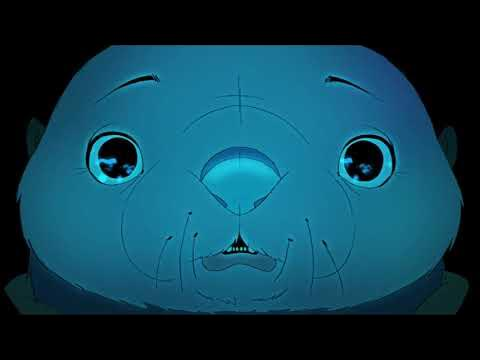
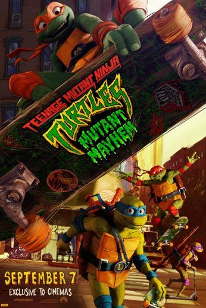
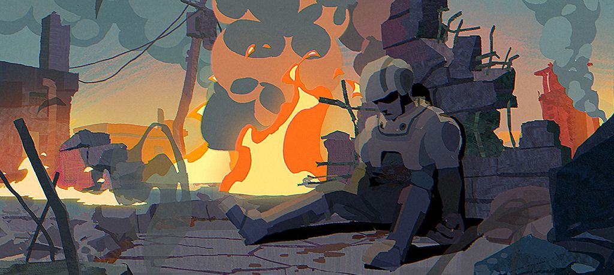

Amelia B

Nelly's fish (19 May 2021)
https://youtu.be/Xe-ZC0C_Rh8?si=icYu03vnmWYZSHce
By Amelia B
A very short animated film about an otter named Nelly and the fish she finds.
My Notes
how I am inspired by and how it will be used in my media:
I love the slow-paced yet smooth frames, though on a continuous animation, i love this visually and I find the technique as something I can use. Discovery.
The movements are not perfectly smooth and can be seen kind of like an in-between of animation and animatic, leaning more on the animation side.
allowing for slower paced movement.
Amelia B in particular, is a large source of inspiration for her simple and more complex animations, as her style allows for detail while also simplicity, giving smoother movements and intresting charaters.
I will not be working up to this smoothness as I want to work more on 3s and want my work to be more blocky, a better sample being her work above ^ But here are other samples of her work as I find lots of inspiration from her ability to give weight to characters as well as her use of still shots that still give movement, whether it be tweening or panning.
Another Sample of Amelia B's work
Nobody Mouse (9 Mar 2023)
A more simplified version (without color), you can see her use of movement to allow the Mouse to have shape and be perceived as 3D even though drawn 2D, giving more weight to the characters.
Her use of messy lines that work together to make the movement clean, and leftover guidelines, is a key appeal towards the animation.
The use of panning across a scene allows for more movement, as well as a helpful technique to add time without taking away or giving yourself a larger amount of work.
Another Sample of Amelia B's work
DECEPTACON (17 Jun 2022)
A sample of her higher animated work with the addition of colour.
having example snapshots of tweeting and panning as well as a great display of staging, as well as using camera shots such as close-ups at the end to make the character look more fierce, giving a better idea to the audience about the personality of the character, judging by expression, staging and camera shots.
the movement is smooth and fluid, with eye-catching characters and a selection of images in succession with out as much movement that gives stronger attention to those with more movement and allows for a showcase of the event without as many moving parts, giving more impact to those moving scenes.
Overall stylised movies/shorts

Teenage Mutant Ninja Turtles: Mutant Mayhem.
07 September 2023
Director: Jeff Rowe
Art directors Arthur Fong and Tiffany Lam Almack

My notes
Audience reception:
rated a 7.2/10 on IMDB, the movie was generally well received, as well as those taking a liking to the use of stylization and a new take on the charters and designs. with a mix of hand-drawn and CG animation styles, adding a very teenager's notebook vibe to the film.
Colour and stylisation (apart from the fact its TMNT and that fandom is already huge) was a large draw-in point for the film.
how I am inspired by and how it will be used in my media:
The film, in particular, was an inspiration as it is one of the films that works with a more scratch-stylized art style, allowing for imperfection, as well as has elements of change. The added this was due to it being a personal inspiration, as one of the newer films that are taking up stylized animation.
It has a beautiful use of colours and does use them to express emotions in scenes so I thought I would include it.
The style is messy and colourful.
Same as on Media Form page

Resilience | Animated Short | CalArts Film
(13 May 2023)
https://youtu.be/F1QRZki3zb8?si=jI-][XiyF5bRi1x90n
Director: Yunie Choi
Sound designer, Mixer: Chanmi Ro
Mixer: Daniel Eaton
Composer: Fabrizio Aiello
"Resilience is about the ravaged nature finding its strength and gradually recovering alongside the vibrant resurgence of life."
My notes
Audience reception: The appreciated the detail as well as the changing of time, showing a progression from death and war to growth and Newlife.
how I am inspired by and how it will be used in my media:
This Short film is another representation, of colors in sequence and is used to set the tone and emotion of the current moment, for each setting/scene.
the colors and design are very simplified yet detailed.



MEDIA requirements
DELETE THIS BEFORE YOU SUBMIT YOUR GOOGLE SITE
1. Identify:
○ one or more media practitioners whose work best inspires your design
○ AND/OR any aesthetic, artistic or cultural styles that your design might conform to (e.g. gothic horror, art deco, Japanese anime, the eighties, steampunk)
2. Consume as many products of this style as you can. Note that use of style might exist in media forms other than what you are producing - explore those too.
3. Identify conventions of your chosen style/s that could be used aesthetically and/or structurally in your media production design. For each:
○ Include an image or images demonstrating the convention. For audio conventions, include the name of the product it is demonstrated in, with a clear description of what can be heard, or embed an audio file in your Google Site.
○ Analyse how you would use the conventions to engage audiences
○ Analyse how audiences would use the conventions to read meaning
○ Evaluate how you could incorporate each convention in your own production design
Remember to cite each source (title, artist, link, date accessed)